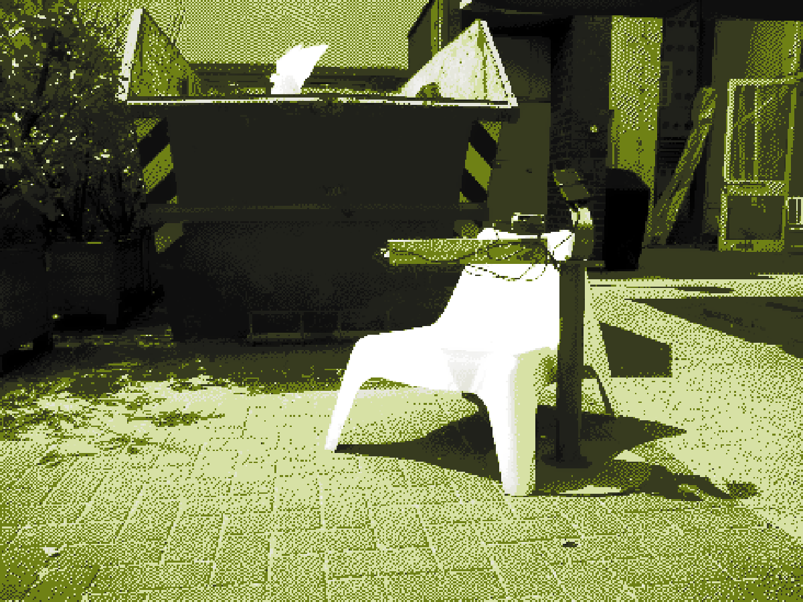
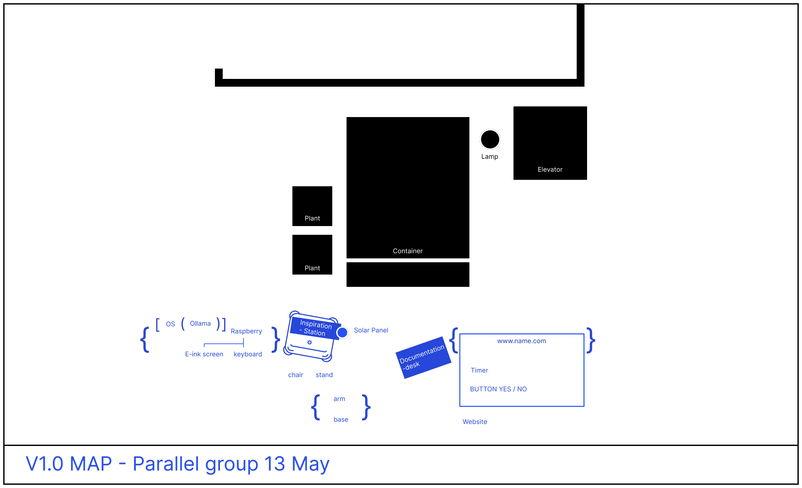
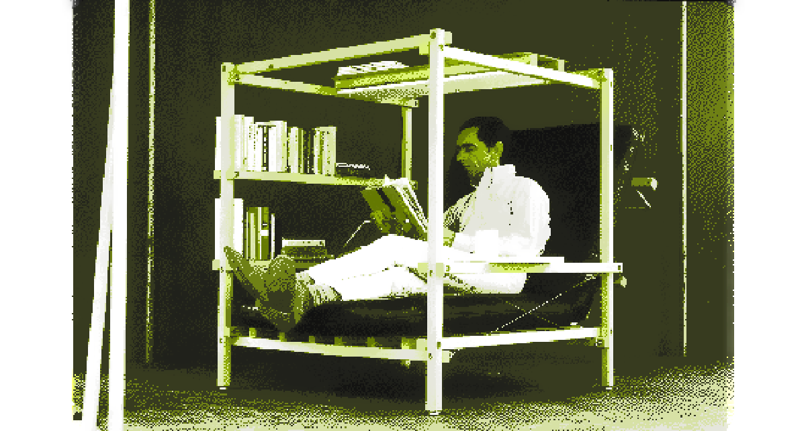
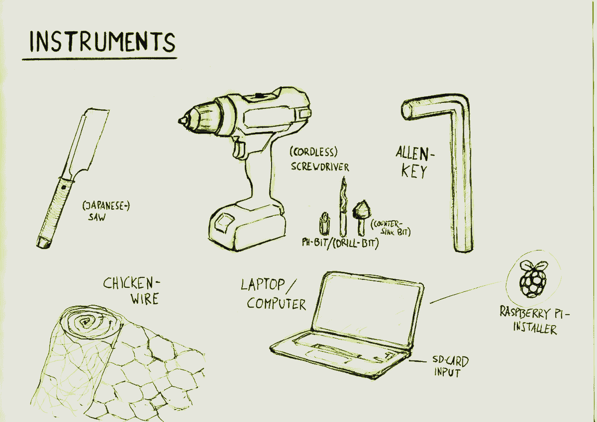
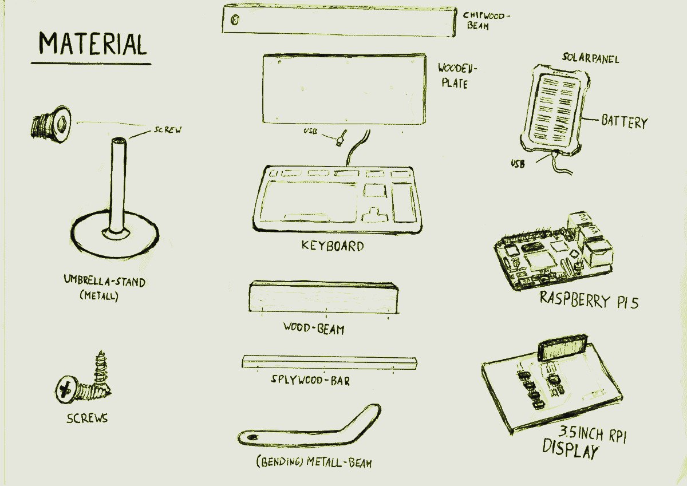
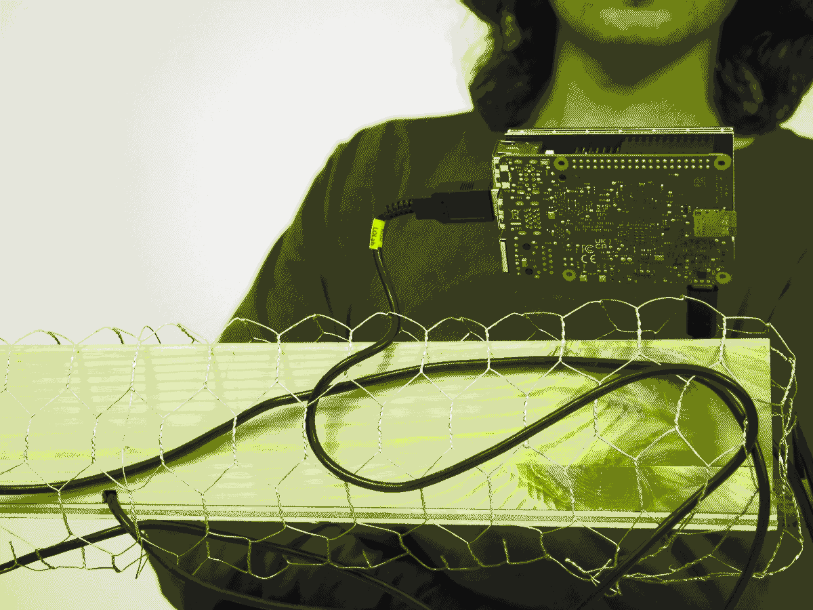
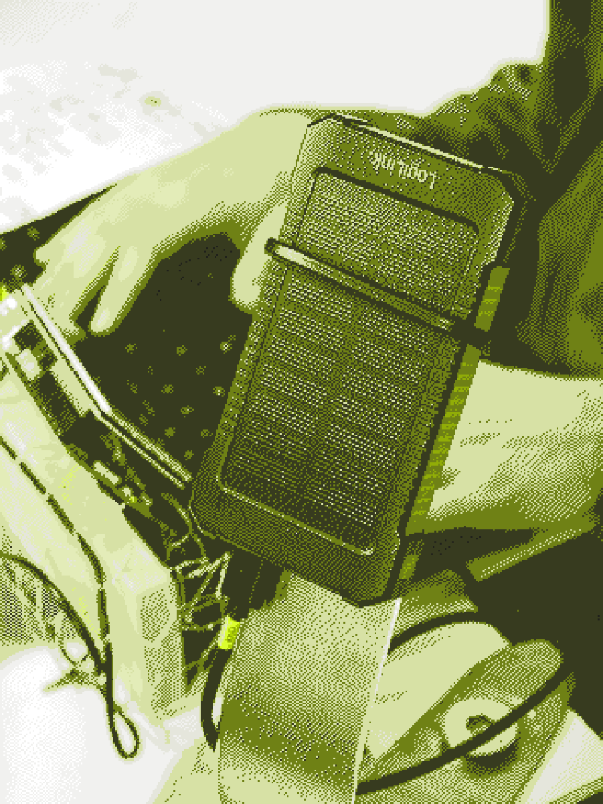
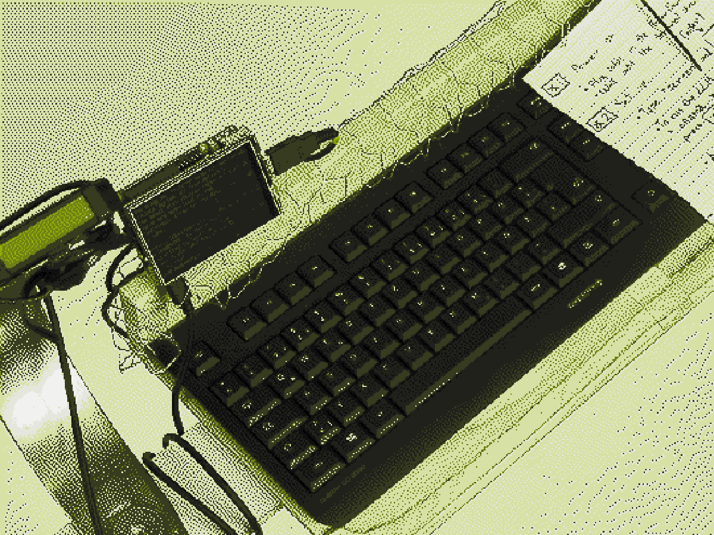

/ timer
0d 00h 00m 00s
Is the container full?
/ press_yes / if the container is full_the timer will start
/ press_no / if the container is not full_the timer will stop
/ documentation
/ chapter 1
The green container.
Here at KISD, there is a big green container. Is used to collect offcuts from the workshop. But we noticed that many discarded items still hold great potential for reuse. However, due to a lack of information and awareness about what these objects are inside the container and how they can be repurposed, they often end up in the landfill.
soooo
we tought what can we design in a low-cost, low-tech, and low-material way, that can offer assistance to trigger creative ideas to reuse the wasted materials inside the container?.
of course
we aim to use materials and technologies that are easily accessible (directly from the container itself!), and the energy consumption should be low, as much as possible, both from the hardware and the software used, following the Permacomputer principles.
/ chapter 2
The plan.
After our brainstorming we decided that we want to create a physical space next to the container, with an AI basic system capable of sparkle our creativity. The this website, which is equipped with a timer that warn people when the container is about to get emptied and it also contain all the documentation of the project. Here a short
Physical space
We decided to build our little space entirely from materials we salvaged around and scraps from the container. In this way, the space doesn’t just support our project; it embodies our core concept—giving new life to old things we consider as waste.
AI station
We mounted an AI system on a Raspberry Pi, a tiny open source one that runs locally, with no internet connection required. The system need a keyboard (even an old one) to chat with the terminal. We opted for an e-ink screen: is ideal for outdoor use, as it remains clearly visible even under strong sunlight, uses almost no energy, and can retain content even when the power is off. Because the system is small and lightweight, it consumes very little power, so the system runs entirely on solar energy. Altogether, this setup allows the system to operate reliably outdoors all day.
Website
is a static website using only basic HTML and CSS and just a sprinkle of Java Script on top. We used also compressed images, a default typeface, and minimal assets to minimize the weight. By minimizing scripts, styles, and heavy processing, we reduce the energy consumption typically caused by more complex web frameworks. At the same time, we’ve worked to find a balance between low-tech implementation and a clear, usable experience for you reading this guide.
everything togheter should look something like this:
/ chapter 3
The guide.
If you want to replace our experiment you will be able to do so by following this guide, step 2 step. We built part of the project with stuff we have found around and we invite you to do the same. Salvaging material is more important than recreating 1:1 what we did.
- How we build the "Inspiration station"
- How we setted up the Raspberry
- How we powered the system
- How we setted up Lucy
- The prompt we used
- Website documentation
- Tutorial
- Chinese translation
How we build the "Inspiration station"
The first thing we needed to discuss was to concretise how the inspiration Station should interact with us. Important aspects we kept in mind was: availability, simple access for usage and the time interacting with it. As we didn't know exactly how long the raspberry in combination with the Ai System will take for a prompt, we came to the conclusion that setting up a chair with some attachments for the keyboard, raspberry, display, battery solar panel would be the best solution… kind of like Isaac’s Super Chair in a different way.
  Including the garbage we found in the container and the wood/metal workshop, we had enough material to optimise our chair for our purpose. Because of the typical KISD chairs in the courtyard, we made the decision to take one of these chairs and upgrade it with our inspirational device. The advantage of the chair is the comfort, the durability in any weather and of course the symbol of KISD. The Umbrella stand was then perfect as it could stand next to the chair as an independent object, establishing a stable base for the station. We were lucky that we had a big screw on top of the stand, where we later on screwed the wood holding the device.
For the keyboard we built a wood board with 4 simple wooden parts:
1. chipboard bar (bottom) it holds the mass of the device on top and is attached to the umbrella stand through a hole in the one end of the bar and the screw from the umbrella stand.
2. Plywood plate it is attached to the chipboard with two screws from the bottom and with two screws to the next two wooden parts
3. Wooden beam It prevents the keyboard to fall and is the back of our device where display and raspberry + cable are furthermore attached. One adjustment is needed; a small hole on the bottom for the kable of the keyboard to go through.
4. Plywood bar this is the last protection for the keyboard to stablize it. We flattened this bar with a grinding machine so it serves also as a hand rest.
After the Keyboard stand was finished we focused on where the display should be attached and how. The easiest way for an individual attachment of every element plus the cables was by covering the wooden bar in the back with chicken wire. It is light and the material is wide spread and one can easily attach items with the wire.
After we put the cables through the chicken wires, eventually the Holding capacity of the cables were as stable as a screen stand, so we just left it like this.
1. Open the Terminal on your computer (with the raspberry pi)
2. Run the following code:
sudo rm -rf LCD-show
git clone https://github.com/goodtft/LCD-show.git
chmod -R 755 LCD-show
cd LCD-show/
sudo ./LCD35-show
3. Wait a few seconds… or even minutes (check if the system is rebooting)
Keyboard: Now you need to put the end of the keyboard cable in the USB input from the raspberry (Black color) and you can start writing.
As we said to use as less resource possible we built the station with scrap and offcuts that we found around. The final design come togheter while sourcing material.
How we setted up the AI station
You can access to the LLM easily nowadays via Website. But in our circumstance, since we want to use the system outdoor and there is no WIFI signal and stable energy resource, we need to build a Local LLM to run offline, and also run with low efficiency. So we choose Ollama as the Local LLM resources, and try different version to choose a workable one with proper Model Size and Inference Accuracy.
And also we want to run the model in a portable way, so you can access to it without big computer. So we install the model to Raspberry Pi, as the brain of Lucy, and connect it to the screen, to show the interface of chatting with her.
We have explored several different devices(Raspberry Pi & Screen especially) to realize our idea. We used a Raspberry Pi W Zero at first and then came across multiple issues. So then after a lot of back and forth found a Raspberry Pi 5. We were able to install the full OS with 64 bit on this and ran Ollama on it locally and connected a LCD screen.
For the screen, our first choice, e-paper is a more energy-efficient and suitable choice. However, due to its limitations—such as low refresh rates, lack of touch support or only basic hardware button input, and smaller screen sizes—it's necessary to adapt the output format, display layout, refresh strategy, and design a corresponding button-based interaction system. Due to time constraints, these adjustments were not implemented in this project. So in our practice, we use the ordinary LCD screen which is compatible with Raspberry Pi.
So here down below is our materials list, so you can have an overview:
1. Raspberry Pi 5(as the brain for computer), and also you can find alternatives, here is the list of minimum requirements for the “brain” to operate Ollama.
a. 64-bit OS (Ollama will not work on 32 bit) OR b. 4GB RAM (it needs some capacity to “think”)
2. MicroSD/SD card (to install the “brain” of the RPI)
3. USB Type-A to Type-C cable (or whichever one for your power supply)
4. Keyboard
5. LCD Screen
6. Router and a stable wi-fi connection
And the first step is to ensure your computer(we use Mac Operating system) have connect to a stable WIFI with password you know. And Downloading Ollama and Raspberry Pi to your computer.
The first issue which actually took us multiple days to fix way a very simple but also frustrating one. In our University we use Eduroam which is a secure Network with VPN. This was blocking our access to connect the Raspberry Pi to it. We tried generating hotspots with the phones but the only two people with enough Data capacity both had an iphone which also blocks certin connections. The solution in the end was getting a Router to create a own Wifi. However this also took some running around the university, big smiles and convincing.
Once we had the Router we had to reset it and ultimately generated our Wifi. Finally we were able to connect the RPI 5 to our Network. Why was all this hassle necersarry you might ask? Well we needed to connect to the Internet to be able to download Ollama. Once we had Ollama we downloaded Smollm too.
After all things are settled, you can then:
Take out the Raspberry Pi’s memory card and insert it into a microSD card reader, then connect it to your computer. Follow the setup guide to configure your Raspberry Pi — including its name (you can leave it as default), a password, and the Wi-Fi name and password it will connect to later. Make sure to remember all your settings — you’ll need them soon! And the Internet for the Pi should be the same as your computer
⚠️Make sure the Raspberry Pi is connected to the same network as your computer.
Open the Terminal on your computer and follow the setup steps to connect the Pi. After that, you can download and manage content directly from your computer terminal.
⚠️You can skip “Enabling VNC to gain visual access” and ssh into the RPI5
ssh pi@raspberrypi.local
Install Ollama Model to Raspberry Pi
After we need to install curl. Then we can use curl and the URL to install the Model. In our case Ollama. (see Screenshot) In our setup, we used the Smollm, which balances performance and size for edge deployment.

ollama pull smollm
ollama run smollm
If your device fails to run this model due to limited memory or compute resources, you may consider switching to a Tinyllama. When choosing an alternative, follow these guidelines:
Model Size: Ensure the model is lightweight enough (e.g., ≤2GB) to run efficiently on Raspberry Pi (especially models like Pi 4 or Pi 5 with 4–8GB RAM).
Inference Accuracy: Choose a model with reasonably accurate responses for your task. Consider evaluating with a small set of benchmark prompts.
⚠️We tested Tiny Ollama, but prefered the responses of Smollm.
Personalize the model. Open the configuration using Nano and define key attributes. The customization allows you to shape how the model behaves and interacts. In our implementation, we defined the following parameters:

Prepare to connect the screen to the Raspberry Pi
Before proceeding, make sure to properly shut down the connection between the terminal and the Raspberry Pi by entering the following command in the terminal: [sudo poweroff] until the LED indicator on the Raspberry Pi turns solid red.
Connect the display panel's pins to the Raspberry Pi. After reconnecting the power, the screen may turn white, ready to import the terminal interface. Re-establish the SSH connection to the Raspberry Pi via the terminal on your computer. Then, attach the terminal interface to the screen using the screen utility. Refer to Code 4.
Now you got the terminal interface on the Raspberry Pi on the screen.
You can remotely adjust Lucy's preferences at any time from your computer. Simply terminate the currently running program, then reconnect to the Raspberry Pi via your terminal. After that, use Nano (or any text editor) to modify the configuration as needed. As seen below you can tweek the parameters of the Modelfile to get completely different answers from Lucy whilst asking the exact same question.

To make the text bigger open the terminal and type in the terminal "sudo dpkg-reconfigure console-setup"
1. Select UTF-8
2. Select "Terminus" or "Terminus Bold"
3. If you have a small screen we suggest to select 12x24
4. Terminal should apply the change without further commands
To navigate in the terminal you need to install Screen by typing in the terminal "sudo apt install screen"
1. Follow the instruction of the terminal
2. Screen should be now installed, but is a program that you need to call everytime you turn on the Raspberry
3. To run Screen, just type "screen" in the terminal
4. To navigate follow the navigation tutorial
⚠️ KEYBOARD LAYOUT ⚠️
In our case we had a German keyboar, if you also have a different keyboard here is it how to change it:
1. In the terminal write "sudo dpkg-reconfigure keyboard-configuration"
2. Keep default (e.g. Generic 105-key)
3. Country origin of your country choose "YOUR LANGUAGE"
4. Choose "YOUR LANGUAGE"
5. AltGr key, you can keep standard
6. To terminate X server, select "No"
7. To apply the new layout, in the terminal, write "sudo service keyboard-setup restart" and reboot the Raspberry with "sudo reboot"
How we powered the system"

When selecting an energy system, we took into account the lack of accessible power outlets in outdoor environments, as well as our desire for the device to remain portable. Considering both portability and sustainability, we identified the following possible options:
Solar power banks – A more sustainable option, though potentially limited in energy efficiency.(0.6W)
Power banks – More efficient, but not sustainable and re-charge needed.
Custom solar energy system – Offers both sustainability and sufficient energy output. However, we have not implemented this option. You may refer here for materials and instructions to build your own solar-powered energy system.
⚠️IMPORTANT⚠️
For a Raspberry Pi 5: 5V/5A USB-C power supply recommended for best performance, 5V/3A minimum.
We tried also with a less powerfull powerbank (2 A) and the Raspberry is able to run either. A warning message appear when the prompt of the model runs "UNDERVOLTAGE DETECTED" but this does not turn off the Raspberry.
How we setted up Lucy

Personalize the model
FROM smollm
nano Modelfile
#check out the Ollama Github page to give your model parameters and instructions
ollama create -f Lucy ./Modelfile
ollama run Lucy
⚠️When we customizing Lucy, we find that try to minimize subjective descriptions, using more objective, noun-based descriptions, and also adjusting the order of instructions (as earlier instructions may carry more weight) and can help convey your customization needs more accurately.
Those are the parameters we change inside the model
Modelfile *
FROM smollm
PARAMETER temperature 0.4
PARAMETER top_p 0.7
PARAMETER frequency_penalty 0.1
PARAMETER presence_penalty 0.3
PARAMETER num_ctx 3048 # adjust if needed for longer prompts
SYSTEM
You are Lucy, a cheerful and clever creative assistant.
Provide precise and imaginative suggestions for how to transform ordinary materials into novel, artistic DIY design projects.
You do NOT repeat or summarize the user's material. Instead, you generate NEW, unexpected project ideas using that material as a starting point.
Your replies must include:
- A short project idea (max 300 words)
- 1 ^`^s2 creative use cases
- Step-by-step instructions (3 ^`^s6 steps)
- Mention of any needed tools, inputs, or adapters
Your tone is creative, and hands-on. Prioritize sustainable, low-cost, and experimental approaches suitable for an Integrated Design
student. Avoid fille>
PROMPT """
Q: I have some old bicycle tubes. What can I do with them?
A: Good day, here ^`^ys a hands-on idea: Create a flexible, modular hinge system for foldable furniture using old bicycle tubes...
Use Case 1: Design a folding stool with elastic joints
Use Case 2: Kinetic book covers for portfolios
Steps:
1. Cut the tubes into 3 cm rings
2. Insert two wooden slats at 90 into each ring
3. Test for torsion, add more rings for reinforcement
4. Drill small pilot holes to fix the rings in place if needed
5. Sand and varnish the wood for a clean finish
6. Use screws or pegs to attach modular panels
Tools: Cutter, drill, wood, sandpaper, bicycle tubes, screws
"""
The prompt we suggest to use and why
The better result for waste repurposing comes after suggesting to the model to create a certain number of ideas. You can try to compose your prompt like this:
Prompt 1
I have [n° of elemets]of [this object] made out of [this material], give me [n°, e.g. 3 or 5 or 10] [optios or ideas or tipps] to [reuse / repurpose] the material.
Website documentation
For the documentation we put everything on this website. The website is mostly html and a bit of css to format the text. The website is hosted for free on github.
Organizing your docuemntation in a webpage is very useful because it allows you also to print the website and have a physical version of it, here is how to do it:
/ Tutorial
/ Turn on the device
- make sure that all the cables are plugged in
- if the device does not turn on, press the button on the powerbank side
- if the light on the Raspberry is red, press the little button on the left side of the Raspberry
- wait until the terminal show up
/ Set up
- type "screen" and press [↵] (enter)
- type "ollama run Lucy" and press [↵] (enter)
/ Writing prompt to the LLM
- type the message and press [↵] (enter)
- to read what the LLM produced, press [STRG] + [ALT]+ [A] all at the same time.
Now you can use the arrows to navigate the answer: UP [↑] DOWN [↓]
To go back to the terminal message input press [ESC]
/ Additional notes
- if the screen turn white, press the little button on the left side of the Raspberry, to reboot the system
- to shut down the Raspberry, write "sudo shutdown -h now"
- SUGGESTED - to consume less power you can enter in an only terminal mode by writing "sudo raspi-config"
🤔Why did we build Lucy…?
- 我们观察到许多被遗弃的物品仍然具有较高的利用价值，但因为人们并不了解被遗弃物品的信息以及再利用的方法，使得其很可惜地走向了填埋场。我们希望用一种low cost/low-tech/low material的方式构建一个物品识别系统，能够帮助人们了解复杂容器（有一定的纵深，物品间有复杂的堆叠）里否存放了什么物品，并且提供创造性再利用/组合物品的方法，从而提高被遗弃物品的利用率。同时我们希望系统使用的材料和技术都能轻易获取，在软件和硬件两方面都尽量减少可能的能耗，并考虑在这些限制与良好的用户体验之间寻找一个合适的平衡点。
- 我们目前以科隆国际设计学院（KISD）木工坊前面的巨大的垃圾桶（size）为试点开展了实践，包含一个物理空间、Tiny Computer for AI system，Website for information，
- 物理空间：利用在城市各处寻找到的废弃的材料搭建的实体的物理场所DIY space。这些材料来自于学校工坊的废弃物、街边被人们遗弃的物品，因此space的搭建也是concept的体现。
- AI system：使用tiny本地大语言模型(Open-source local large language model无需联网即可运行)、低能耗墨水屏搭建的AI System，二手键盘用来与大模型对话。墨水屏不仅适用于在户外的强光下阅读，而且消耗极少的能源并能够在断电后保持运行一段时间。整个系统体量很小，且无需联网，因此系统能耗很低（maybe some data to show the energy），使用太阳能供电，能保持全天户外良好的运作。
- 使用HTML搭建静态网站Static Website，Dithered Images、default typeface、xxxxxx，用尽可能低的技术实现我们想要达到的目的，我们尝试在技术使用尽可能少的技术、尽可能少的执行技术所带来的能源损耗与良好的用户体验之间寻找一个合适的平衡点。
🤝With Lucy, (hopefully)you can do…
- 下面是你可以如何使用我们的系统：
- DIY space
- 询问大语言模型（名字），了解物品再利用的方法
- 你可以在space中的sticker上看到开始/关闭与模型的对话的具体指令
- Website
- 可以通过扫描QR code进入网站
- 使用摄像机拍摄物品，上传物品信息（more details）
- 时间条显示自上次清理容器以来所经过的时间。
当容器接近装满时，用户可以在网站上暂停时间条，以提示需要清理或进行下一步处理
- 该项目的
- DIY space
- 一个塑料躺椅，轻便且易于移动；
- 一把伞用于保护户外的设备；
- 从学校木工坊寻找到的木头边角料，用于放置键盘
- 一个可弯曲的铁片，用于放置屏幕、Raspberry Pi等各种元件
- 铁丝网，用于放置各种元件。
- Raspberry Pi 5（相当于计算机的大脑），也有其他的选择，但这是成功运行Ollama的最低要求：
- 64-bit
- 4GB RAM
- …
- 微型SD卡
- Type A-Type C的数据线
- 有数据线的可用的键盘
- LCD Screen
- 路由器
- 将Raspberry Pi的记忆卡取下，插入MicroSD中，然后将其接入电脑。然后跟随这个教程，在Raspberry Pi中完成设置，包括RaspberryPi的名称（可以不改动保持默认即可）、自身的密码以及稍后它将接入的WI-FI名称和密码，并记住你的设置！随后你将用到它们。
⚠️为Raspberry Pi设置的网络应该和电脑使用的网络保持一致。
- 打开电脑上的Terminal，跟随这个教程将Raspberry Pi配置到电脑上，并匹配网络、更新内容，随后你可以在电脑远程录入内容到Raspberry Pi。你可以参考代码库的
代码1。⚠️可以跳过“Enabling VNC to gain visual access”章节
- 向Raspberry Pi安装Ollama模型
- 参考
代码2将合适的模型引入到Pi，我们使用的是Sllama。如果你的设备不能成功运行该模型，你可以尝试选择其他体量更小的模型基于以下原则：- 确保体量大小能够在Raspberry Pi上运行
- 确保模型回答的准确度
⚠️我们测试了tiny ollama，不能在Pi5上运行。
- 定制你的大语言模型。进入Nano为模型设置名字，你可以调整模型的回答方式和语气等，代码参照
代码3。我们调整了她的：- Name of our model (Lucy)
- personality
- answer shortly
⚠️ 在定制模型时，尽量减少主观性的、形容词类的描述，多使用客观的、名词性的描述，以及调整指令的前后顺序（权重不同）也可以帮助定制需求传达的准确性。
- 参考
- 准备将屏幕板块与Raspberry Pi相连。
- 切记关闭terminal和raspberry Pi的连接（在terminal中输入
sudo power-off），并且切断电源。Raspberry Pi上的灯变红时，就可以准备连接屏幕了。
- 将屏幕板块的引脚接入Pi后重新接入电源，重连屏幕变白。在电脑上通过终端重新建立与raspberry pi的SSH链接。将电脑的terminal界面导入到screen中，参考
代码4
- 屏幕上显示Raspberry Pi的界面，输入
Ollama run Lucy，打开Lucy模型，现在你可以与她聊天了。聊天结束时你可以通过输入bye指令并回车输入sudo shutdown -h来结束程序。
- 切记关闭terminal和raspberry Pi的连接（在terminal中输入
- 你可以随时在电脑端远程调整Lucy的偏好，只需关闭正在运行的程序，然后在电脑上重新与Raspberry Pi的链接，进入Nano进行修改即可。
- 太阳能充电宝，更加可持续的选择，但可能能源效率不够。
- 普通充电宝，选择更多，但不可持续并且续航能力差。
- 太阳能系统，可持续且能源效率充足。但我们未实现，可参照这里准备材料以及搭建你自己的太阳能能源系统。
- 打印二维码，因此你可以将它们粘贴在垃圾桶附近。
👣How to build Lucy step by step…
1. 搭建物理空间🏠
下面是我们在KISD附近找到的各种废弃材料，你当然也可以根据手边现有的材料自由选择。主要原则是要确保工作时的舒适性。因此你可以考虑座位区域和工作区域的尺寸，并尽量让它保持可调节，以确保对所有人都友好、易于使用。
下面是我们使用的材料，或许你可以参考…：
2. 搭建运行LLM的微型计算机
大模型对话现在已经变得非常容易，前提是在有网络连接的情况下。但在我们的案例中，我们想要在户外搭建一个系统，这意味着没有稳定的Wi-Fi信号以及电力支撑。所以我们需要在离线情况下运行大模型，并且尽量降低它的能耗。本地大模型是这种情况下的选择，在我们的案例中，我们选择了Ollama，并通过不断尝试选择了合适大小和回答准确度的版本。
我们使用 Ollama 作为本地大型语言模型，并在 Raspberry Pi 上运行它，然后将其连接到电子墨水屏进行显示。整个系统由太阳能供电。如果你有一台适合的旧电脑，也完全可以使用它，只需按照此处的教程（链接）运行 Ollama 即可。否则，以下是我们所使用的设备和材料：
接下来第一步是确保你的电脑连接上了稳定的网络，并且密码已知，稍后会用到。并且下载 Ollama 和 Raspberry Pi 到你的电脑上。
在Mac上配置Raspberry Pi

3. 为运行提供能源系统
在选择能源系统时，我们考虑到在户外环境中没有可接入的插头，且希望这个设备具有一定的可移动性。因此考虑能源的便携性，以及可持续性，以下是几种可能的选择：
⚠️针对Raspberry Pi 5，建议使用 5V/5A 的 USB-C 电源以获得最佳性能，最低要求为 5V/3A。记得测试你的电源是否能撑起运行系统。
4. 编写网站
KISD/Short_project/Ben_and_Lasse/Computer_room/Parallel_group/Adrian_Matteo_Leijie_Virginia